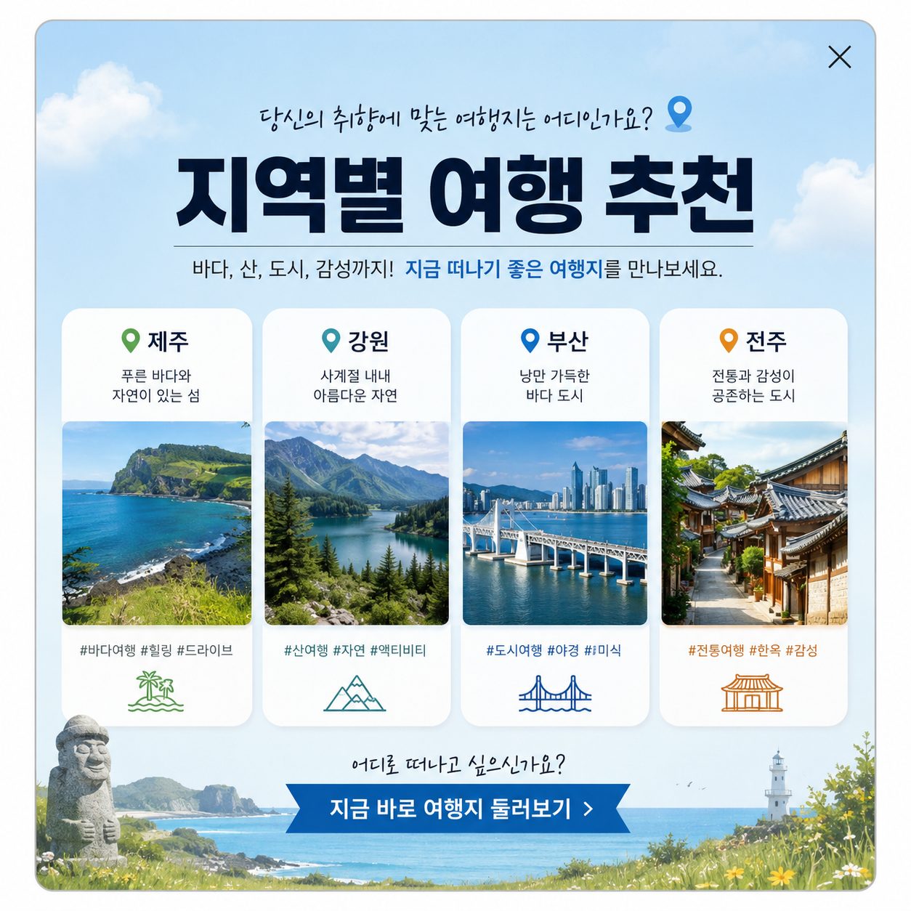

5초 뒤에 자동으로 팝업이 사라집니다.

지역별 추천 명소와 상세 정보를 한눈에
지역명 · 시/군
도심 속 휴식처, 산책로와 전망대가 있는 공원입니다.
지역 특산물과 먹거리를 즐길 수 있는 전통 시장입니다.
오래된 사적과 박물관이 모여있는 문화 공간입니다.
탁 트인 바다와 석양을 볼 수 있는 인기 포인트입니다.
계절에 따라 수확 체험과 동물 체험을 즐길 수 있습니다.
밤에 켜지는 조명과 거리 공연으로 유명한 장소입니다.